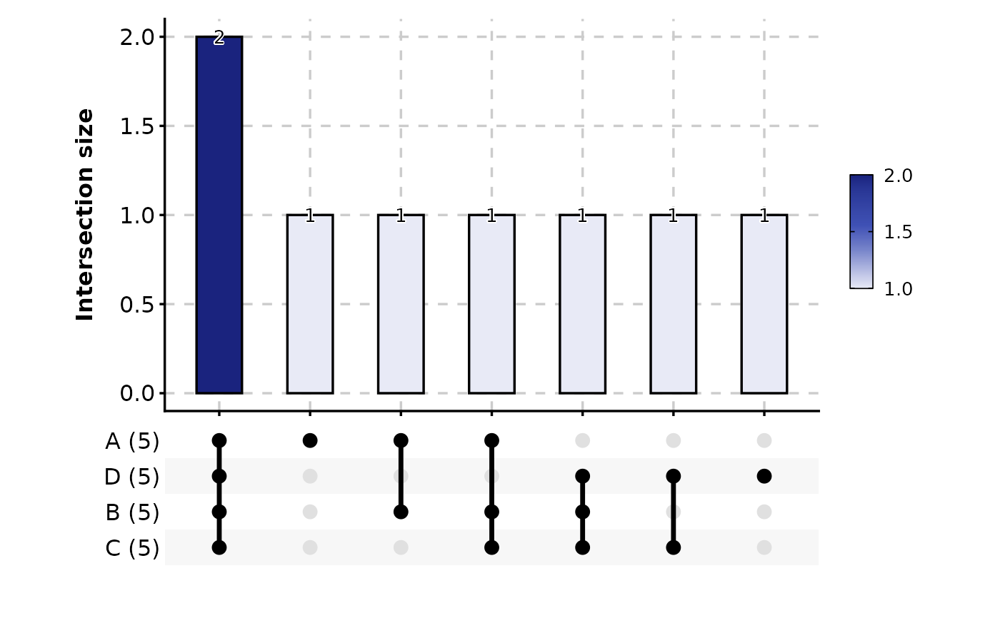
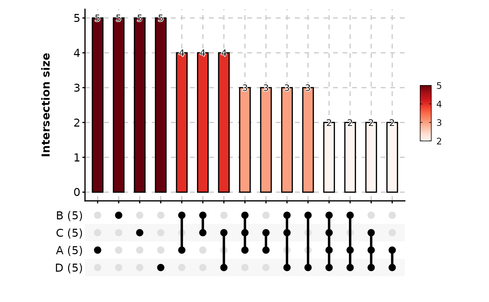
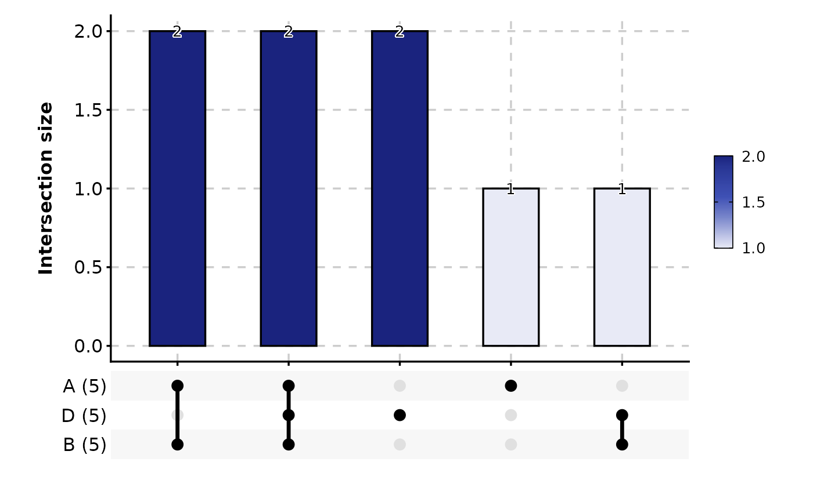
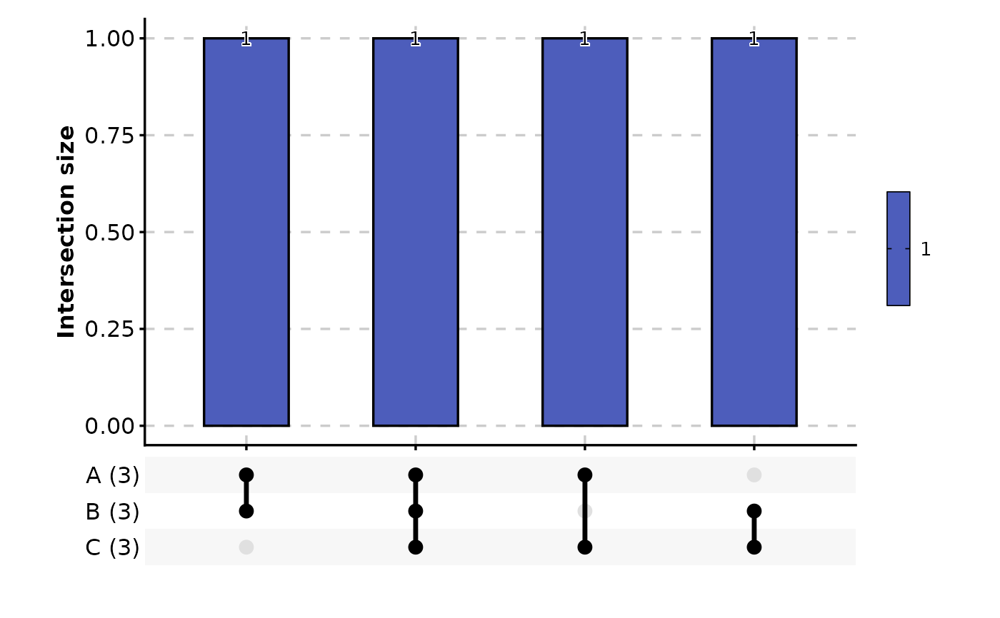

Creates an UpSet plot to visualize intersections between sets. UpSet plots are a more scalable alternative to Venn diagrams for showing set intersections. The function supports multiple input formats: list, long, wide, and pre-processed UpsetPlotData objects.
Usage
UpsetPlot(
data,
in_form = c("auto", "long", "wide", "list", "upset"),
split_by = NULL,
split_by_sep = "_",
group_by = NULL,
group_by_sep = "_",
id_by = NULL,
label = TRUE,
label_fg = "black",
label_size = NULL,
label_bg = "white",
label_bg_r = 0.1,
palette = "material-indigo",
palcolor = NULL,
alpha = 1,
specific = TRUE,
theme = "theme_ggforge",
theme_args = list(),
title = NULL,
subtitle = NULL,
xlab = NULL,
ylab = NULL,
aspect.ratio = 0.6,
legend.position = "right",
legend.direction = "vertical",
combine = TRUE,
nrow = NULL,
ncol = NULL,
byrow = TRUE,
seed = 8525,
axes = NULL,
axis_titles = axes,
guides = NULL,
design = NULL,
...
)Arguments
- data
A data frame containing the data to plot
- in_form
A character string indicating the datatype of the input data. Possible values are "auto", "long", "wide", "list", or "upset". Default is "auto" which will detect the format automatically.
- split_by
Column to split the data by for creating multiple plots
- split_by_sep
Separator for concatenating split_by columns
- group_by
Column(s) to group by (depends on in_form)
- group_by_sep
Separator for concatenating group_by columns
- id_by
Column identifying unique instances (required for long format)
- label
Whether to show count labels on bars
- label_fg
Color of label text
- label_size
Size of label text
- label_bg
Background color of labels
- label_bg_r
Radius of label background
- palette
Color palette name
- palcolor
Custom colors for palette
- alpha
Transparency level (0-1)
- specific
Show only specific intersections (not all overlaps)
- theme
Theme name (string) or theme function
- theme_args
List of arguments passed to theme function
- title
Plot title
- subtitle
Plot subtitle
- xlab
X-axis label
- ylab
Y-axis label
- aspect.ratio
Aspect ratio of plot panel
- legend.position
Legend position: "none", "left", "right", "bottom", "top"
- legend.direction
Legend direction: "horizontal" or "vertical"
- combine
Whether to combine multiple plots
- nrow
Number of rows for combined plots
- ncol
Number of columns for combined plots
- byrow
Fill plots by row
- seed
Random seed for reproducibility
- axes
Axis handling for combined plots
- axis_titles
Axis title handling for combined plots
- guides
Guide handling for combined plots
- design
Custom design for combined plots
- ...
Additional arguments passed to ggupset::scale_x_upset
Examples
# Example 1: Basic upset plot with list input
data <- list(
A = 1:5,
B = 2:6,
C = 3:7,
D = 4:8
)
UpsetPlot(data)
#> Warning: Using `size` aesthetic for lines was deprecated in ggplot2 3.4.0.
#> ℹ Please use `linewidth` instead.
#> ℹ The deprecated feature was likely used in the ggupset package.
#> Please report the issue at <https://github.com/const-ae/ggupset/issues>.

# Example 2: Without labels
UpsetPlot(data, label = FALSE)
# Example 3: Custom palette and show all overlaps
UpsetPlot(data, palette = "Reds", specific = FALSE)

# Example 4: Limit number of sets and intersections
UpsetPlot(data, n_sets = 3, n_intersections = 10)

# Example 5: Wide format data
wide_data <- data.frame(
A = c(TRUE, TRUE, FALSE, TRUE),
B = c(TRUE, FALSE, TRUE, TRUE),
C = c(FALSE, TRUE, TRUE, TRUE)
)
UpsetPlot(wide_data, in_form = "wide")
